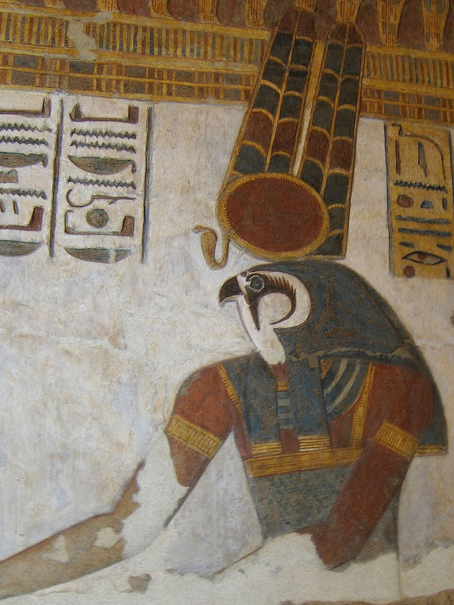

Хонсу — луна Фив и третий член великой Фиванской тройки: отец Амон, мать Мут, а между ними — он, лунный сын. Его имя пишут через диск и серп месяца, и само оно значит «тот, кто путешествует»: луна идёт по небу за солнцем, пересекает Дуат и обновляется в новолуние.
Его называют «первосвященником Амона» — формально эту высшую жреческую должность носил живой человек, но покровителем её считался Хонсу. Он целитель: к нему несли больных, особенно одержимых, — на стеле Пашер-ан-Хонсу рассказано, как бог изгнал злого духа из принцессы. И он счётчик лет: по луне водят календарь, измеряют время и сроки праздников.
Как его видеть
Хонсу изображают молодым юношей-мумией: тело обвито пеленами, из-за головы — косичка молодежи, над нею — лунный диск с серпом, иногда и «урей». В руках — скипетр вас и уас-жезл, знак жизни анх. Иногда — соколом или бараном, а в образах времени его обвивает змей. В раннем виде он связан с Осирисом как «Хонсу, который в Осирисе»: луна меряет загробное время для мёртвого царя.
Карнак: Хонсу-в-Барке
Главный его дом — храм Хонсу в Карнаке, «Хонсу-в-Барке-нефер». Здесь хранилась его священная барка — носилы, на которых в праздники его образ проносили из Карнака в Луксор, навещая Амона-Мут-Хонсу «на юге». Двери и стены храма Птолемея говорят с нами словами: «Хонсу, первосвященник, что считает судьбы».
Что он делает
- Считает время — луна задаёт месяцы, годы и даты праздников; «владыка счёта лет».
- Исцеляет и защищает — отгоняет злых духов и болезнь, ему ставят стелы чудес.
- Судит судьбы — как «первосвященник Амона» он участвует в решении участи человека.
- Освещает ночь — лунный свет для тех, кто в Дуате: луна не гаснет даже во тьме.
Праздник Новолуния и долина
В Новолуние в Фивах отмечали его праздник: барку несли к Мединет-Абу — там был его «второй дом», а в долинах некрополя — «дорога Хонсу». К его образу шли с мольбами о здоровье; жрецы-«херихеб» читали ему тексты, а он «возвращал зрение и слух» в гимнах. В эллинистическое время его слава дошла до Нубии и Палестины: его имя найдено далеко за Фивами.
Как луна связана с Ра
Луна — не соперник солнца, а его ночная пара. Ра правит днём, Хонсу — ночью; вместе они держат Маат во времени. Поэтому на стенах его зовут «глазом Ра» в лунском смысле: ночное око следит за миром, пока солнце в Дуате. В фиванской ночи Амон-Ра и Хонсу звучат рядом, как две стороны одного небесного цикла.
Интересные факты
- Стела Пашер-ан-Хонсу — древнейший известный текст об «изгнании духа»: чудесное исцеление через статую бога.
- Его барку называли Нефер-неферу — «прекрасный прекрасными», и несли её на плечах жрецов за пределы храма.
- Имя Хонсу дают детям в формулах «Амон-хотеп» («Амон доволен») и «Хонсу-хотеп» — благословение луны в имени.
- В Дуате луна не умирает: её «исчезновение» в новолуние — путь через подземное небо, а не гибель.